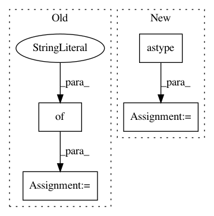

407a5112ab430db6f23fc4317a7400ada797d274,examples/bench.py,,,#,5
Before Change
clf1 = linear_model.LogisticRegressionCV(solver="lbfgs",
multi_class="multinomial")
clf2 = grid_search.GridSearchCV(mord.LogisticIT(), {"alpha": np.logspace(
-3, 3, 10)})
cv = cross_validation.StratifiedShuffleSplit(y, test_size=0.3)
print(cross_validation.cross_val_score(clf1, X, y, cv=cv).mean())
print(cross_validation.cross_val_score(clf2, X, y, cv=cv).mean())
print()
After Change
import numpy as np
boston = datasets.load_boston()
X, y = boston.data, np.round(boston.target).astype(np.int)
y -= y.min()
clf1 = linear_model.LogisticRegression(
solver="lbfgs", multi_class="multinomial")
In pattern: SUPERPATTERN
Frequency: 3
Non-data size: 4
Instances
Project Name: fabianp/mord
Commit Name: 407a5112ab430db6f23fc4317a7400ada797d274
Time: 2015-10-21
Author: f@bianp.net
File Name: examples/bench.py
Class Name:
Method Name:
Project Name: yahoo/TensorFlowOnSpark
Commit Name: 981e4266d4ea816b08a762193bd52f40cd1a3242
Time: 2019-08-07
Author: leewyang@verizonmedia.com
File Name: examples/mnist/keras/mnist_inference.py
Class Name:
Method Name: inference
Project Name: dirty-cat/dirty_cat
Commit Name: f70e71d5c7fdc8e25391e54e74c3402fb323ad5c
Time: 2018-06-06
Author: pierreglaser@msn.com
File Name: examples/plot_employee_salaries.py
Class Name:
Method Name: